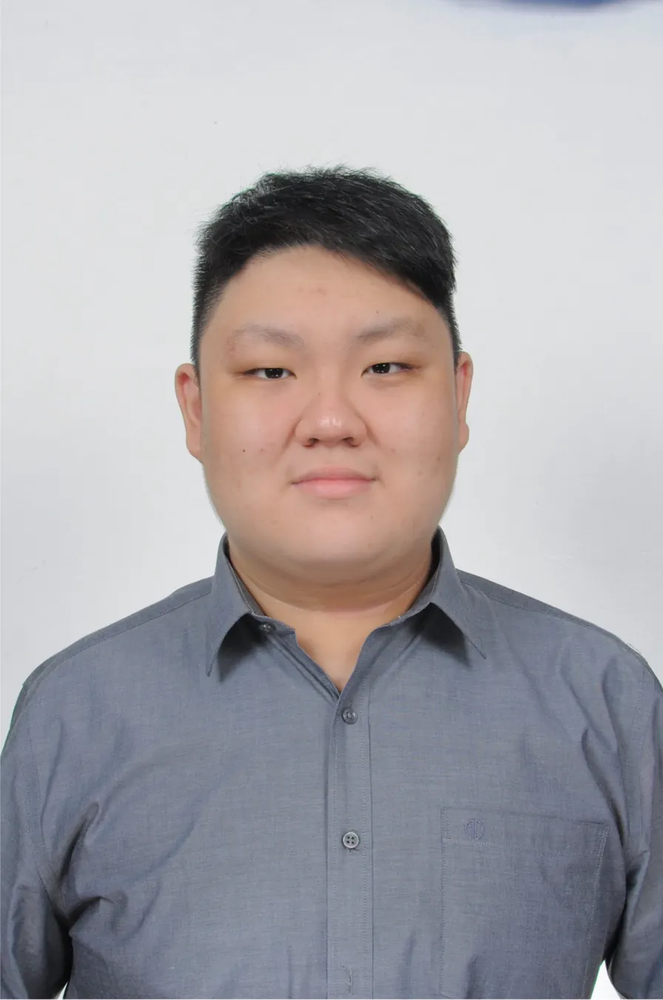

ASIA PACIFIC UNIVERSITY (APU) · 2026
BSc (Hons) Computer Science (Cyber Security)
CGPA 3.21 / 4.00
Hi, I'm Alfred. My experience across software, cybersecurity, cloud infrastructure, networking and IT operations has shaped a broader view of how systems are designed, secured, deployed and maintained.
Bukit Jalil · Kuala Lumpur, Malaysia

An end-to-end perspective across connected technologies.
I am a Computer Science (Cyber Security) graduate with experience spanning software systems, cloud architecture, network technologies and IT operations.
Internships, freelance client work and academic projects have given me practical exposure across the system lifecycle—from implementation and integration through security assessment, deployment and maintenance.
I am especially interested in cybersecurity, cloud infrastructure, systems engineering and operations. I approach challenges analytically, value reliable solutions and continue learning across disciplines.
Understanding how technologies connect, where risks emerge, and what keeps systems dependable.
I work to understand requirements and expectations, then turn them into practical solutions that meet the intended goals.
Opportunities that combine technical understanding, practical problem solving and reliable systems.
Also open to other related roles.
Client delivery and academic work across cybersecurity, cloud, software systems and data.
A practical mix of security, infrastructure, software and operations technologies.
Hands-on experience through internships and freelance collaboration.
CGPA 3.21 / 4.00
CGPA 3.01 / 4.00
Movement and time outdoors help keep me balanced.
Open to conversations about cybersecurity, cloud, infrastructure and systems opportunities.
Tell me about the position and what it involves.